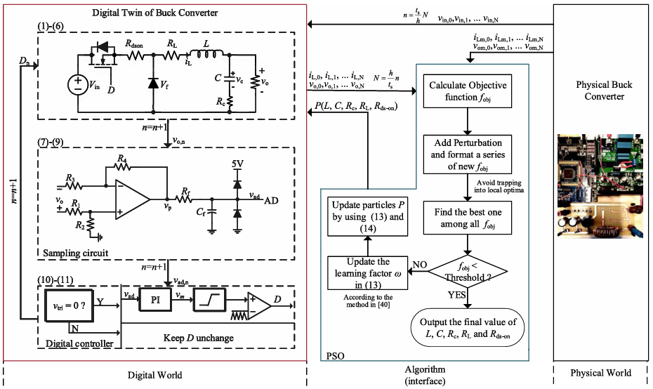
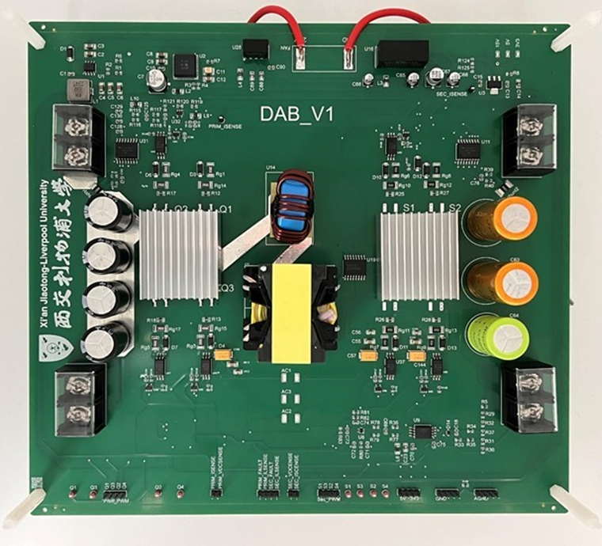

I am passionate about robotics, electronic and control engineering. My current research focuses on autonomous navigation and robotic perception.

MSc Robotics (2025 – 2026)
Focus on autonomous systems, computer vision, and control engineering.

BEng Electronic Science and Technology (2021 – 2025)
Graduated with First Class Honours. Coursework in electronic engineering, digital twin, power electronic converters.

This project proposes a health indicatorestimation method based on the digital-twin concept aiming for condition monitoring of powerelectronic converters. The method is noninvasive, without additional hardware circuits, and calibration requirements. Anapplication for a buck dc–dc converter is demonstrated with theoretical analyses, practical considerations, and experimental verifications. The digital replica of an experimental prototype is established, which includes the power stage, sampling circuit, and close-loop controller. Particle swarm optimization algorithm is applied to estimate the unknown circuit parameters of interest based on the incoming data from both the digital twin and the physical prototype. The outcomes of this project serve as a key step for achieving noninvasive, cost-effective, and robust condition monitoring for power electronic converters.

Simulated a 6-DOF robotic arm in Gazebo, performing pick-and-place tasks through inverse kinematics and control loops.
Feel free to reach out for collaborations or opportunities in robotics and electronic engineering.